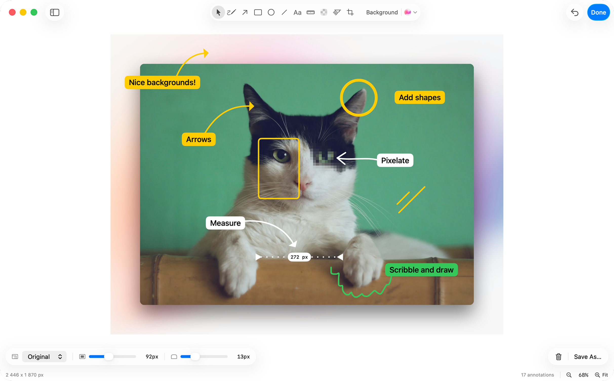
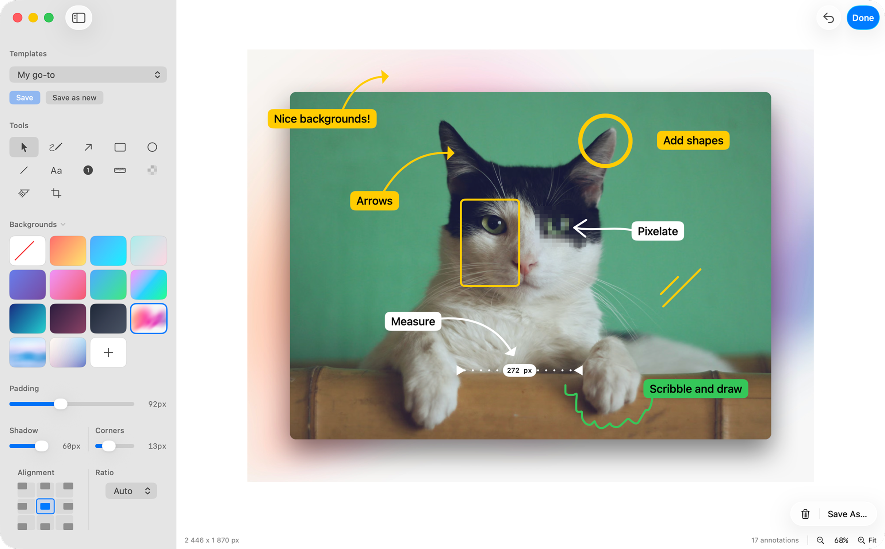

Annotate.
Polish.
Ship.
SimplShot is the free macOS screenshot editor for developers, writers, and makers who need polished, annotated screenshots — fast. Powerful annotation tools, reusable templates, custom backgrounds, and one-click batch capture. No account. No cost. Just a tool that works.


Preview showing advanced mode.
Built for everyone who ships screenshots.
SimplShot fits into your workflow whether you're writing docs, filing bugs, building a product, or creating tutorials.
Developers
Capture your macOS app at every required size in one click. No manual resizing. No re-exporting one by one.
Technical Writers
Save a template once — background, padding, shadow — and apply it to every documentation screenshot instantly. Consistent output, every time.
Support Teams
Annotate steps with arrows and numbered callouts. Blur emails, passwords, and personal data before you share. Help customers faster.
Indie Makers
Turn a plain app window into a polished launch asset. Batch-export at every size you need — website hero, Product Hunt, social post — in one shot.
Course Creators
Make every tutorial screenshot look professional with custom backgrounds and consistent framing. No design skills needed.
QA Engineers
Annotate bug screenshots with arrows, shapes, and pixel measurements. File clearer reports. Spend less time explaining.
Every tool you need.
SimplShot packs a full annotation toolkit into a clean, distraction-free interface — built around the tools you actually reach for, every single day.
Free Draw
Sketch freehand on your screenshot with smooth, natural strokes.
Shapes
Circles, rectangles, and more — quickly draw attention to exactly what matters.
Arrows & Lines
Multiple arrow styles and line types to point, connect, and guide.
Pixelation
Blur or pixelate sensitive content — emails, passwords, private data — before sharing or publishing.
Highlight & Dim
Focus attention with highlights or push background content into shadow.
Measurements
Show exact pixel distances and dimensions right on the image — useful for bug reports, design feedback, and layout reviews.
Numbering
Add numbered callouts to walk viewers through steps in sequence.
Custom Backgrounds
Beautiful gradients, solid fills or your own images to make your screenshots pop.
Crop
Trim and frame your captures perfectly before you export.
OCR
Extract text from any screenshot instantly — copy it, search it, or use it anywhere.
Keyboard Shortcuts
Move faster through your workflow with shortcuts for every tool, action, and export.
Color Picker
Sample any color anywhere on your screen and instantly copy its value in any format.
Batch capture.
Every size at once.
Define a set of custom window sizes, then capture any app window in all of them in a single click. No more resizing, recapturing, and re-exporting one by one.
- Perfect for Mac App Store screenshots — capture at both required sizes at once
- Generate website hero, Product Hunt, and social post sizes in a single click
- Set your own size presets and reuse them across every release
- Saves hours of repetitive resizing and re-exporting on every launch
Save a look.
Reuse it instantly.
Create a template once with your preferred background color or image, padding, shadow, corner radius, and more. Then apply that same setup to future screenshots in a click so every export stays fast, polished, and consistent.
- Save the styling choices you keep dialing in over and over
- Reuse branded backgrounds, spacing, shadows, and rounded corners instantly
- Keep release notes, social posts, and docs screenshots visually consistent
- Turn repetitive polish work into a one-click starting point
Watch the quick tour
Get a feel for how SimplShot fits into your workflow in under two minutes.
SimplShot is free and open source.
No subscriptions. No accounts. No surprises. Just a tool that works.
Trusted by developers, writers, and creators.
"I use SimplShot for every doc screenshot I publish. Templates mean I never think about framing twice — just capture and ship."
"Batch capture alone saved me an hour on my last Product Hunt launch. Every size, one click. I'm not going back."
"The blur tool is a game-changer for support work. Redacting personal data before sharing screenshots used to slow me down. Now it takes two seconds."